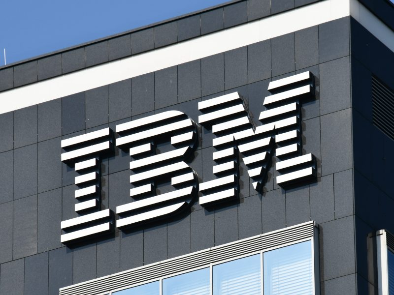

VMware (Broadcom)

From: 2022 Till: Current
As a Sr. Member of Technical Staff, I work on modernizing Application and Infrastructure services with the help of DevOps.
Infosys

From: 2013 Till: 2022
As a Lead Consultant, I led multiple client engagements and projects and delivering Managed Services for multiple clients.
IBM
From: 2011 Till: 2013
As a Client Specialist, I worked gathering client requirements and assessing
Storage and Backup Infrastructure to provide solution for the client.
Hewlett-Packard
From: 2006 Till: 2011
I worked as a Storage Consultant engaging in Client Enablements and assisting clients in designing and implementing Storage and Backup Solutions.